Resolve compliance issues fast with AI-powered guidance through Process Risk and Controls.
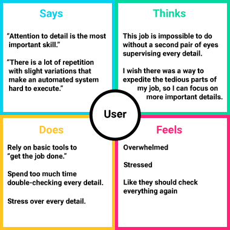
An empathy map helps us establish our personas by finding their voices, feelings, and motivations.Without high-level discipline and organizational skills, our users are at risk to underperform, cost their organization, or lose their jobs.
Industries like finance and healthcare face strict regulations that require scrutinous risk management and control frameworks. Non-compliance could lead to significant penalties.
PRC frameworks need ongoing assessment and improvements, utilizing audits to refine processes and controls
Priya is responsible for identifying, assessing, and mitigating risks associated with business processes. Her primary focus is ensuring that processes are efficient, compliant, and capable of achieving organizational objectives while minimizing potential risks.
Jonathan manages a team of Process Risk Analysts, including Priya. An expert on Process Risk Controls (PRC), he has used various tools, but always seems to resort back to tried-and-true methods because of inaccuracies.
In order to know what we are going to need to design, we need to illustrate a typical interaction between Priya and Jonathan.
My team and I assembled an affinity map to organize the results of our competitive analysis into gaps left by the competition and opportunities presented by these gaps.
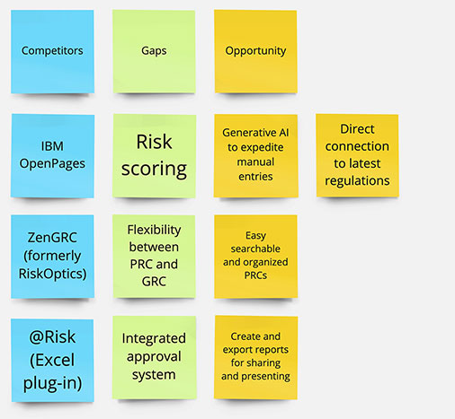
An affinity map is a great way to organize the results of the competitive analysis into opportunities left by the competition.Let users find any Control or Process in seconds, instead of digging through spreadsheets or shared drives
Surface current regulatory requirements directly in the workflow, instead of routing users to outside reference material
Turn any view into a polished report ready to share with stakeholders
Use Generative AI to trace regulatory changes directly to the Controls they affect, flagging coverage gaps automatically instead of relying on manual review — cutting the time it takes to keep PRCs current.
With opportunities identified, we sketched, iterated, and refined wireframes for each dashboard. Since users access the product through a secured VPN on laptop or desktop, those screen sizes were our focus.
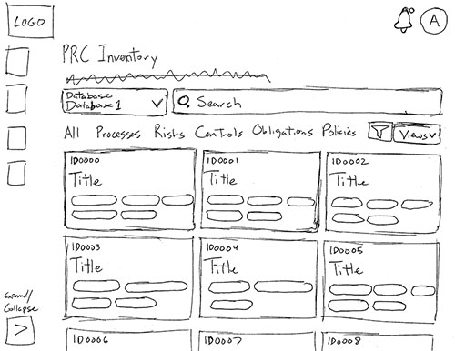
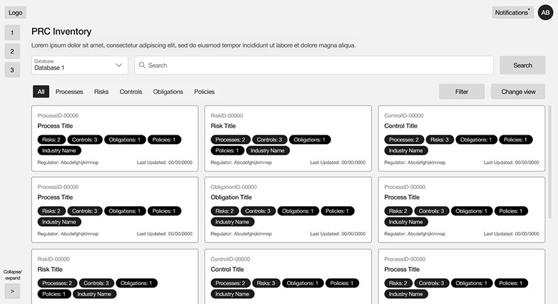
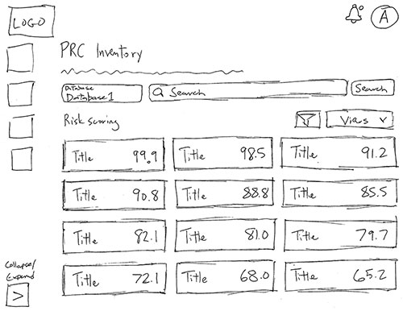
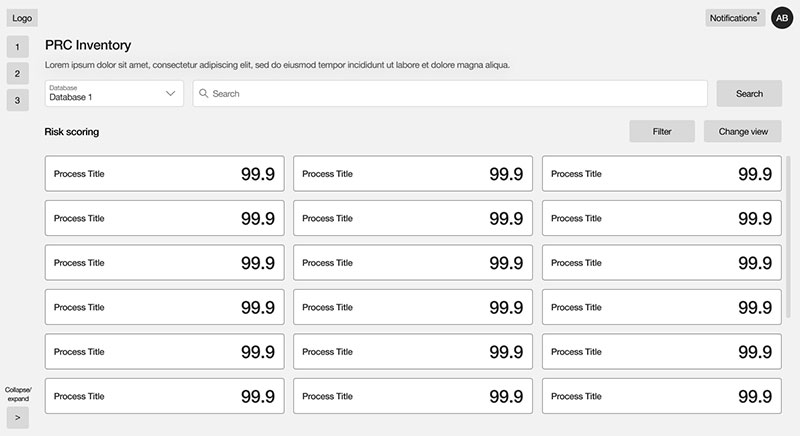
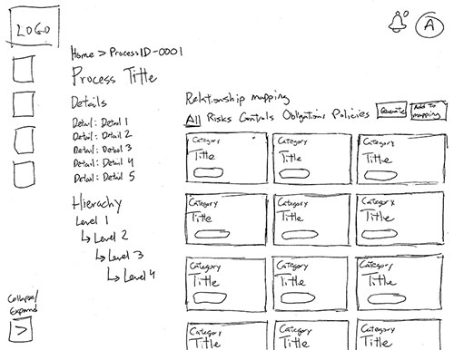
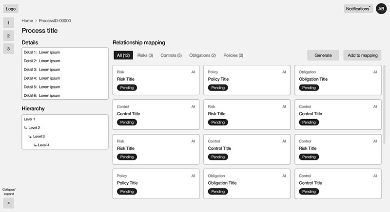
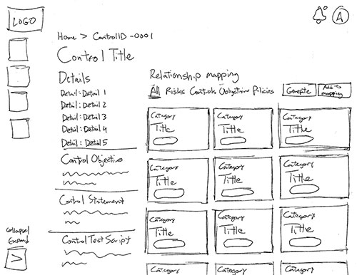
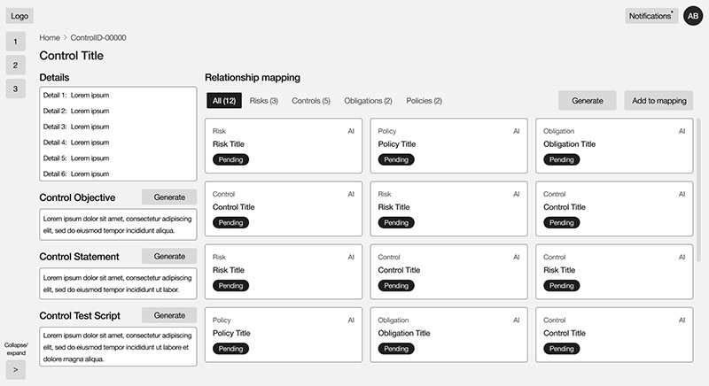
Observing users interacting with prospective designs is crucial to finding out if the designs work practically.
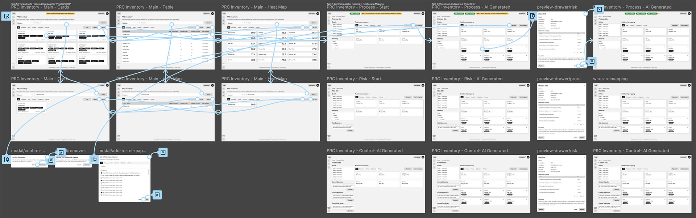
After assembling a lo-fi prototype to demonstrate a Process Risk Analyst's journey to update a Control, the team and I conducted several moderated live usability studies with stakeholders and subject matter experts fully versed in Process Risk Controls (PRC).
Based on moderated usability sessions with 10 participants via Microsoft Teams (~1 hour each), asking each to use the low-fidelity prototype to find a Control and update its Control Objective, Control Statement, and Control Test Script.
All testers found the Control and updated its Control Objective, Control Statement, and Control Test Script, noting "the flow works"
All testers assumed high Risk scores were a positive — "Oh, that's bad?!"
Most testers thought important fields were "tucked away" or "off to the side"
Most testers were deterred by information in cards — "I just need a short description, the number of Processes and Controls, and the industry name"
The scoring system associated high scores with high risk, a negative indicator. This runs contradictory to most scoring systems where high scores are positive.
Higher scores are associative with positive results, so we change the concept to higher scores indicating more confidence in that PRC.
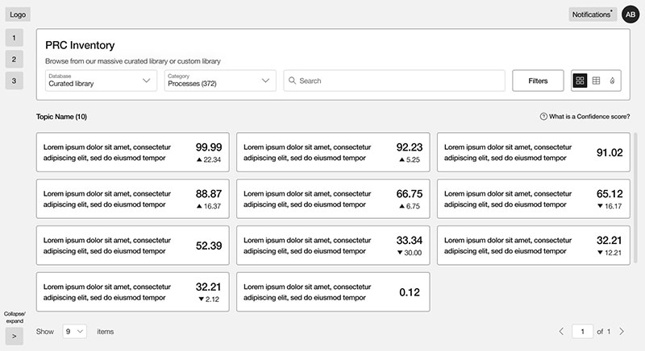
Confidence scores make sense when higher scores are positive.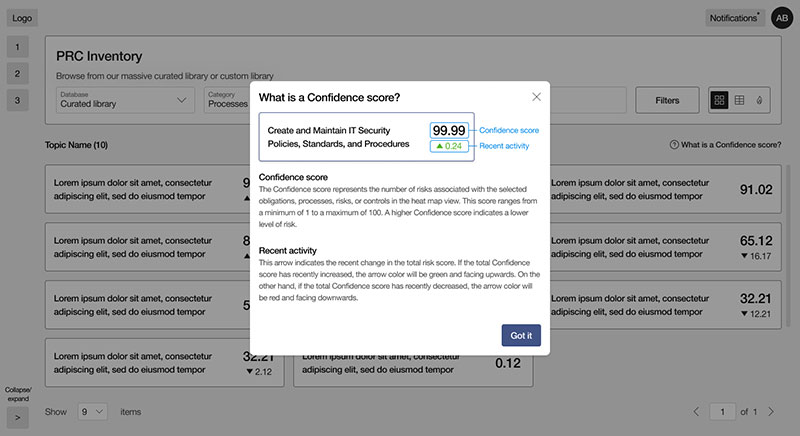
A modal was designed to explain the Confidence scoring system.Important Process Risk Control fields like Control Objective, the Control Statement, and Control Test Script needed to be prioritized.
A series of complementary components were created to emphasize these crucial fields and move them higher on the screen.
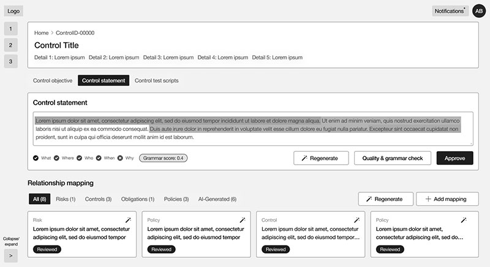
A more useful hierarchy of information for our users.The platform draws from a repository of 100,000+ regulations, processes, risks, and controls — powerful in scope, but testers found unnecessary data surfacing within each card and table.
After collaborating with PRC experts, we reduced the information within the cards and tables to only essential information. Also, we removed the tab component and streamlined the search component to allow filtering by category.
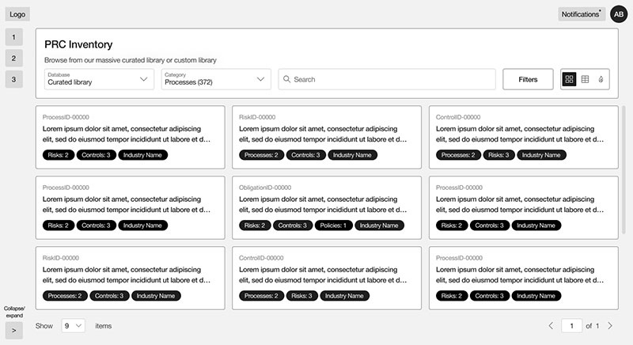
With only required information in the cards and a streamlined search component.If testing is important, retesting is more important. We conducted another round of interviews and confirmed our solutions. They worked! All test users performed their provided tasks more efficiently and praised the design adjustments.
After validating our solutions with users, the next step was to finalize our dashboards and bring them to life.
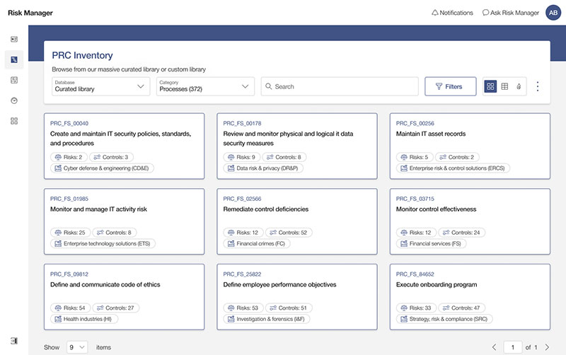
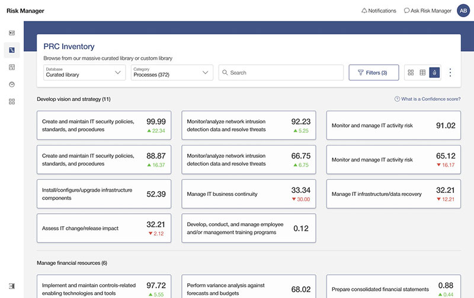
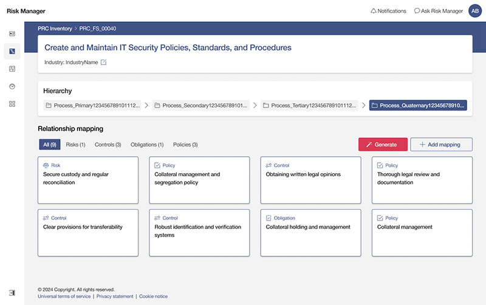
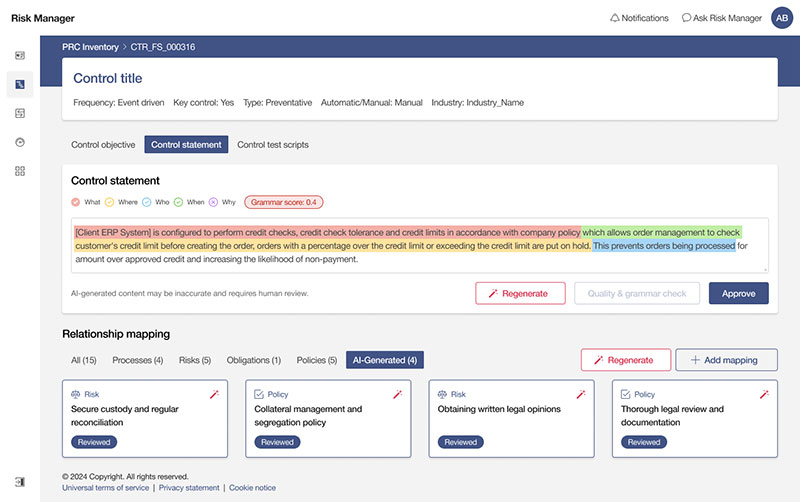
The final step before handing off our designs to the development team was to take our high-fidelity mock-ups and create a working prototype, which would be an integral part of future presentations, helping us verify the final details with testers, and serve as a visual template for the developers to emulate.
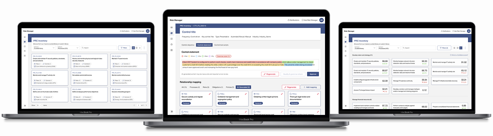
Risk Scores ran backwards — a high score meant high risk, which felt wrong the moment users saw it. Renaming them Confidence Scores and flipping the scale so higher meant better resolved the confusion instantly, without any change to the underlying data.
Control Objective, Control Statement, and Control Test Script were the fields users needed most, but they were buried under lower-priority information. Reordering the page around these fields cut the time it took analysts to find what they needed.
Even experienced Process Risk Analysts were overwhelmed by cards and tables loaded with secondary data. Stripping each view down to only what's essential — and simplifying the search to filter by category — made the interface faster to scan without sacrificing capability.